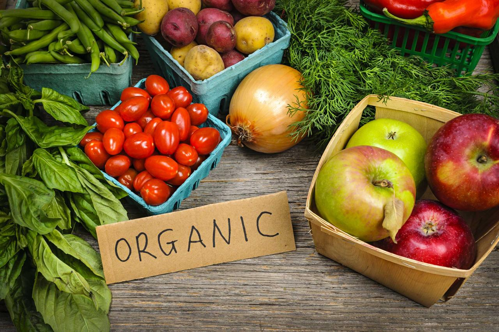

Влияет ли то, что я ем на окружающую среду?
Влияет ли то, что я ем на окружающую среду?
Безусловно. Промышленная система выделяет большую часть вредных веществ, которые загрязняют атмосферу, земледелие разрушает почвы, животные в процессе жизнедеятельности производят большое количество метана и других газов.
 Почему продукты животного происхождения оказывают такое большое воздействие?
Почему продукты животного происхождения оказывают такое большое воздействие?
Сначала мы затрачиваем ресурсы на выращивание корма для животных, на содержание самих животных, а потом еще и на переработку полученных продуктов. Выращивая только зерновые культуры, очевидно сокращается воздействие на окружающую среду. Значит ли это, что люди не должны есть мясо?

Каково влияние органических продуктов на экологии?
Технология выращивания органической продукции не прибегает к использованию удобрений, пестицидов, антибиотиков и т.д. Такой способ ведения сельского хозяйства считается более щадящим по отношению к растениям, животным и людям.